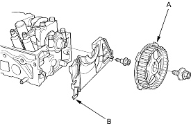
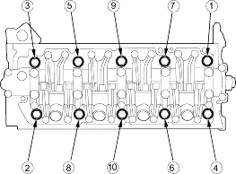

- Remove the timing belt, refer to the '01 Civic Shop Manual on this CD (see page 6-18).
- Remove the camshaft pulley (A) and back cover (B).

- Remove the cylinder head bolts. To prevent warpage, unscrew the bolts in sequence 1/3 turn at a time; repeat the sequence until all bolts are loosened.
CYLINDER HEAD BOLTS LOOSENING SEQUENCE:

- Remove the cylinder head.